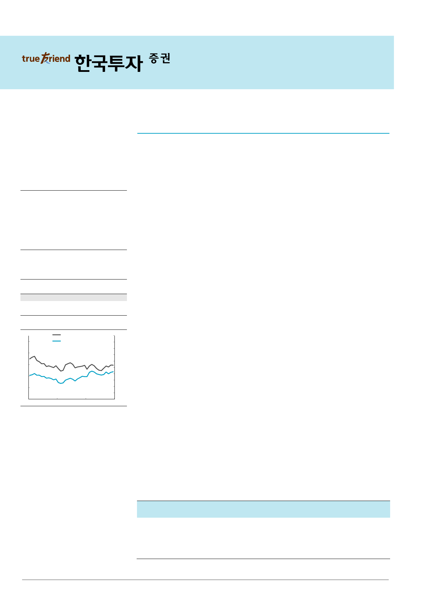

기업 Note
2017.6.5
NAVER(035420)
매수(유지)
소셜 로그인 서비스로 Win-Win
목표주가: 1,050,000원(유지)
Stock Data
KOSPI(6/2)
2,372
주가(6/2)
864,000
시가총액(십억원)
28,480
발행주식수(백만)
33
52주 최고/최저가(원)
900,000/689,000
일평균거래대금(6개월, 백만원)
68,138
유동주식비율/외국인지분율(%)
76.6/61.4
주요주주(%) 국민연금
10.8
Aberdeen Asset
Manangement Asia Limited 5.0
외3 인
주가상승률
절대주가(%)
상대주가(%p)
1개월
7.9
1.0
6개월
14.4
(5.9)
12개월
24.0
4.5
12MF PER 추이
(배)
50
12MF PER (좌)
NAVER 주가 (우)
40
30
20
10
0
Jul-14
Jul-15
자료: WISEfn 컨센서스
Jul-16
(천원)
2,000
1,800
1,600
1,400
1,200
1,000
800
600
400
200
0
소셜 로그인 서비스를 통한 국내 인터넷 산업 내 영향력 강화
소셜 로그인 서비스인 ‘네아로(네이버 아이디로 로그인)’의 월간 이용자가 1,000만명을 돌
파했다. ‘네아로’는 외부 사이트 및 앱을 이용할 때 네이버 계정을 통해 회원가입 및 로그
인이 가능한 서비스다. ‘네아로’가 활용 가능한 외부 사이트의 수는 매주 150~200개씩 증
가하고 있어 국내 인터넷 산업 내 NAVER의 영향력이 지속 확대될 전망이다. 다수의 신
규 서비스와 마찬가지로 단기간 내 직접적인 수익 기여는 제한적일 수 있다. 하지만 ‘네아
로’의 서비스 확대로 외부 사이트에서 발생하는 정보를 보다 정확하게 수집할 수 있으며
‘Naver Pay’와 ‘NAVER 톡톡’ 등 기존 서비스들과의 시너지도 극대화 될 전망이다. 이용
자 데이터를 활용한 광고 효율의 개선과 Traffic Lock in 효과 강화가 기대된다.
소셜 로그인 기능의 매력적인 효과에 주목
소셜 로그인 기능이 외부 사이트들에게 제공하는 매력적인 이점들을 감안할 때 ‘네아로’의
서비스 범위 확대가 빠르게 진행될 전망이다. 소셜 로그인이 보편화된 미국의 사례에 비
추어볼 때 이용자들은 1) 신규 사이트 가입에 소요되는 시간, 2) 아이디 및 패스워드 생성
에 대한 불편함, 3) 개인 정보에 대한 보안 등을 이유로 소셜 로그인 기능을 활용한다. 따
라서 소셜 로그인 기능을 도입한 사이트들의 경우 상대적으로 신규 이용자 유입 및 트래
픽 확대가 용이하다. 실제로 Facebook에 따르면 소셜 로그인 기능을 도입한 미디어 사이
트들의 경우 트래픽이 과거 대비 평균 300% 증가했으며 커머스 업체들은 보다 구매력이
높은 이용자들을 확보했다. NAVER 아이디를 통해 구매를 가능케 했던 ‘NAVER Pay’의
경우에도 편의성 개선이 이용자들과 중소형 오프라인 상점들과의 접점을 확대하며
NAVER 쇼핑 부문의 성장은 물론 가맹 업체들의 매출을 증대 시켰다.
매수 의견 유지, ‘네아로’로 기존 및 신규 사업 강화
NAVER에 대한 매수 의견과 목표주가 1,050,000원(SOTP)를 유지한다. O2O 서비스와
모바일 게임 등 신규 어플리케이션의 출시 증가로 ‘네아로’의 활용처가 빠르게 확대될 것
으로 예상한다. ‘네아로’의 활용처 확대로 외부 사이트에서 발생하는 트래픽에 대한 정보를
보다 효율적으로 확보할 수 있음에 따라 NAVER가 집행하는 광고들의 효율이 개선될 전
망이다. 비니지스 플랫폼 대비 성장이 더딘 광고 부문에 긍정적으로 작용할 것이다.
‘Naver Pay’와 ‘NAVER 톡톡’ 등 기존 서비스들과의 시너지도 극대화되며 기존 쇼핑 부문
도 강화될 것이다. 또한 ‘네아로’ 서비스 활성화로 NAVER API에 대한 외부 사이트들의
의존도가 높아짐에 따라 하반기부터 본격화될 기업 대상 클라우드 사업의 잠재 고객층도
두터워질 전망이다.
김성은 3276-6158
askim@truefriend.com
매출액 영업이익 순이익
EPS 증감률 EBITDA PER EV/EBITDA PBR ROE DY
(십억원) (십억원) (십억원)
(원) (%) (십억원) (x)
(x) (x) (%) (%)
2015A
3,254
830
519 17,619 15.3
986 37.3 19.7 6.8 26.5 0.2
2016A
4,023 1,102
749 25,746 46.1 1,265 30.1 17.2 5.2 26.2 0.1
2017F
4,584 1,241
868 30,120 17.0 1,410 28.7 16.9 4.9 21.6 0.2
2018F
5,220 1,460 1,023 35,518 17.9 1,635 24.3 14.0 4.2 20.8 0.2
2019F
5,947 1,721 1,211 42,041 18.4 1,903 20.6 11.6 3.6 20.3 0.2
주: 순이익, EPS 등은 지배주주지분 기준